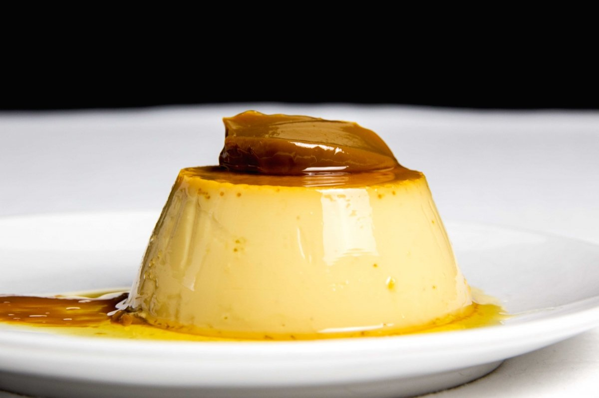

Flan casero con dulce de leche
Ingredientes: Leche, huevos, azúcar, esencia de vainilla, dulce de leche.

Tiramisú
Ingredientes: Queso mascarpone, huevos, azúcar, café, vainillas, cacao en polvo.

Helado artesanal
Ingredientes: Leche, crema, azúcar, saborizantes naturales (vainilla, frutas, etc).